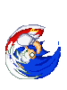
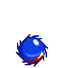
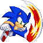
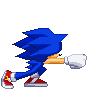
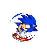
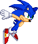
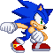

The Lightspeed Bar
Sonic's core resource, giving him access to some of his most powerful movement and mixup tools. The main benefits he gets from this move are his Lightspeed dashes, which are either quick burst movement special moves or mixup tools that grant a full unscaled combo on hit. This resource is mainly gained by performing Boom Kick or charging it up using Lightspeed Charge.


Lightspeed Charge
Sonic charges up his Lightspeed meter by channeling his energy, instead of normal power charge he gains his unique resource instead! Sonic will charge quicker depending on how long he has been charging for.



Insta-Shield
An invincible air move Sonic can use to fight against anti-airs. In return has low blockstun and hitstun to make converting off of it into combos difficult.


Drop Dash
Sonic turns into a ball which quickly approaches the ground. This attack has two stages, one in the air and one on the ground. In the air, he quickly drops down with a hitbox; on the ground, he dashes forward with a short burst of momentum. When this move is hit on the ground, Sonic is able to cancel into any normal he desires. The primary purpose of the move is to extend combos using its restand property on a ground hit, halving the juggle point counter and allowing simple combo extensions.


Sonic Head Bash
Sonic jumps and does a reactable, special cancelable overhead kick. Use this move as a low resource mixup tool by converting off of it into EX homing attack or L Boom Kick.


Windup Punch
Sonic does a strong, short ranged punch. This move is valuable for its reverse beat properties and massive damage on hit. Sonic cannot access this move from all of his chains, and is only able to get it from his 5LK and 5MK chain routes. Going into 5LP or 2LK will not allow Sonic to use this move in a sequence.

Spin Charge
Sonic does a short ranged spin attack. This move is valuable for its Hard Knockdown property, which restricts Z-Escapes. Use it as an ender for chains using low damage Light attacks, such as 2LK or 5LP.


Sonic Flare
Sonic performs an unsafe on-block kick that launches the opponent far away from him. The moves value becomes clear when used to cancel into the Pursuit attack, gaining him Lightspeed Gauge and allowing for a groundbounce using the followup.

Pursuit
Sonic quickly pursues his opponent in the air, tracking their position. This is a followup to Sonic Flare and is valuable due to its ability to cancel into the Pursuit Attack.
Pursuit Attack
Sonic follows up the Pursuit with Sonic Eagle, giving a groundbounce. This allows for combo extensions that easily carry to the corner.



Speed Dash
Sonic does a short, reactable command dash to either the left or right. This move can be useful to reset to neutral when a pressure sequence isn't working out in your favor.
Lightspeed Dash
Sonic uses a quarter of his Lightspeed Gauge to do a very fast command dash in either the forwards or backwards directions. Use this move as a mixup tool with the forwards variation due to its low recovery, or use it as a nigh infallible escape tool with the backwards version.

Lightspeed Attack
Sonic's big mixup and combo tool using half of his Lightspeed Gauge. Sonic crosses up the opponent with a reactable dash forward. On hit this move gives Sonic a full launch and an unscaled combo starter. This move can even be combo’d into from 5HP for an easy conversion.
Alternatively, this move being done with the 214 direction and a full Lightspeed bar will make Sonic cross up the opponent twice in a row, giving massive damage for a Lightspeed resource dump using his full meter.